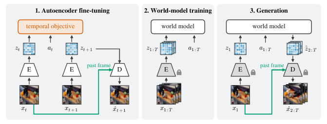
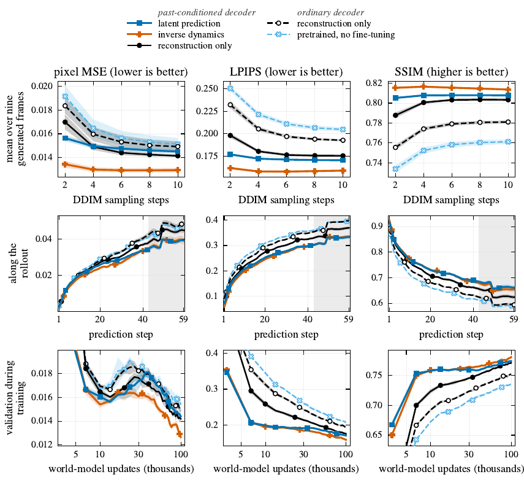

Paper Notes
Question and Setup
作者关注一个常被隐藏的设计选择：视频世界模型先把帧压到 z_t，再学习 p(z_{t+1}|z_t,a_t)。如果 encoder 主要为了逐帧重建，z_t 会携带大量高频纹理和不可预测噪声，world model 需要预测这些没有动作依据的内容。结果可能是单帧看起来清楚，但 rollout 很快偏离。
输入是连续机器人观测 x_t 和动作 a_t；训练先学习 E、D，再冻结 E 训练 action-conditioned causal diffusion-forcing transformer。输出是未来 latent 序列，经 decoder 还原视频帧。作者把问题限定在 latent/interface 设计，而非增加一个更大的生成器。
Paper Notes
Reading Figure 1: Two Changes Before the World Model

Scardecchia and Yang (2026), original figure; CC BY 4.0 · Paper & Caption ↗
图 1 的第一步用相邻帧对 (x_t,x_{t+1}) 微调 autoencoder。除了 reconstruction，还对 z_t、z_{t+1} 和动作施加 temporal objective。第二步冻结 encoder，只用这些 latent 训练动作条件 world model。第三步从一帧上下文 x_1 和动作序列 a_{1:T} 生成 latent，再由 decoder 逐帧解码。
关键的 decoder 改动是 D(z_{t+1}, x_t)，而不是只用 D(z_{t+1})。推理时作者使用初始上下文 x_1 作为 past frame 条件，因此生成 latent 不必重复编码所有静态细节；论文明确把 temporal objective 与 past-conditioned decoder 视为相互独立、可组合的两项改动。
Paper Notes
Training Objectives and Gradient Path
L_rec 是像素绝对误差与 perceptual loss 的组合；主实验把 KL 设为 0。L_temp 包括 latent future prediction、pixel future prediction、InfoNCE contrastive prediction 和 inverse dynamics。最有效的两条是 latent prediction 与 inverse dynamics：前者预测下一 latent，后者从 (z_t,z_{t+1}) 预测 a_t。
训练时先更新 E、D，使 temporal loss 直接改变 z 的几何；然后冻结 E、D 更新 world model。world-model 的误差不会反向更新已经冻结的 encoder，所以作者分别报告 equal-reconstruction 与 equal-budget 两类比较。past-conditioned decoder 让 reconstruction 梯度可以更多地依赖 x_t，减少对 z_{t+1} 记忆高频细节的压力。
L_AE=(1-λ)L_rec+λL_temp
Paper Notes
Evidence: Bridge and WorldGym

Scardecchia and Yang (2026), original figure rendered from author source; CC BY 4.0 · Paper & Caption ↗
主要实验在 Bridge V2 机器人视频上微调 FLUX.1 autoencoder；ID 是 Bridge 留出的片段，OOD 是 AutoEval 的不同机器人设置。equal-budget 使用 autoencoder 80,000 updates、world model 100,000 updates，均值通常来自 3 个训练 seed。像素 MSE 在表中乘以 10^3，LPIPS 越低越好。
在 past-conditioned decoder 下，latent prediction 的 ID/OOD/2-step/long LPIPS 为 0.169/0.257/0.177/0.331；普通 reconstruction decoder 的对应值为 0.194/0.302/0.232/0.394。inverse dynamics 的像素 MSE 更低（ID 13.07、OOD 27.92），但 latent prediction 的 latent MSE 最低（0.046）。这些是作者设置下的结果，不等价于更快的端到端推理。
2-step DDIM 相比 10-step 通常带来更强的 LPIPS/SSIM 优势；policy evaluation 在 17 个 Bridge 任务上比较 OpenVLA、Octo、RT1X。2-step 时 latent prediction 的模拟—真实成功率 Pearson 相关为 0.67，普通 reconstruction baseline 为 0.21，但该评估使用一个训练 seed 和 bootstrap，不是机器人闭环部署。
Paper Notes
What the Ablations Actually Support
frontier 实验显示增大 temporal weight 会降低 unpredictable latent variance，但 λ=0.7 时 reconstruction 约恶化 54%；past conditioning 在各个权重下把 reconstruction error 再降约 17–25%。因此结论不是“时间目标越强越好”，而是 decoder context 可以承担部分不可预测细节，使 latent 有空间向 dynamics 倾斜。
作者还报告 DINOv2 encoder 的补充实验：小 λ=0.1 可以改善每个 frame metric，但更大的权重会损害 FID/FVD。这提示语义或通用视觉特征并非自动等于可预测 latent；需要看它是否帮助未来状态而不是只增加描述性信息。
Paper Notes
Limits and Relevance to Video Generation
数据是机器人动作条件视频，latent 是 2D spatial autoencoder，不是因果 3D video VAE。实验也没有证明在互联网视频、开放式文本到视频或更长时间尺度上同样成立；更大 world model 的长 horizon 增益会缩小。temporal objective 过强会降低 distribution metrics，且 equal-reconstruction 对比需要更多 autoencoder updates，不能解读为无额外成本。
对 VideoGen 的可迁移启发是把“可预测 latent”当作可测接口：分别报告重建、latent prediction、短步采样和长时一致性，而不是只看单帧 FID。past-conditioned decoding 是一种信息分工机制：把静态/不可预测内容交给 context，把动作相关变化留给 latent dynamics。
Discussion
Reading Questions
Why can a better reconstruction latent hurt a world model?
因为重建目标奖励保存所有视觉细节，其中包括动作无法决定的纹理或噪声；未来预测必须在这些维度上猜测。
Is the past-conditioned decoder a free improvement?
不是。它改变了 decoder 的条件信息和训练接口；论文用同预算和不同 decoder 的消融分开测量，而且仍需上下文帧。
What would be the next VideoGen test?
在同一视频数据和计算预算下比较 reconstruction-only、temporal objective、past conditioning，并单独报告 latent 可预测性、短/长 rollout 与生成分布指标。
Does the paper prove semantic features are useful?
不证明。DINOv2 只是补充对照；主张是 temporal structure 与 context 分工改善 dynamics，不能把它扩展成语义增强结论。
References
Original figures reproduced from the paper and author source under CC BY 4.0; captions identify the source. No results were redrawn.
Verified on 2026-11-22. Paper results refer to the linked versions. Repository references were checked on this date.